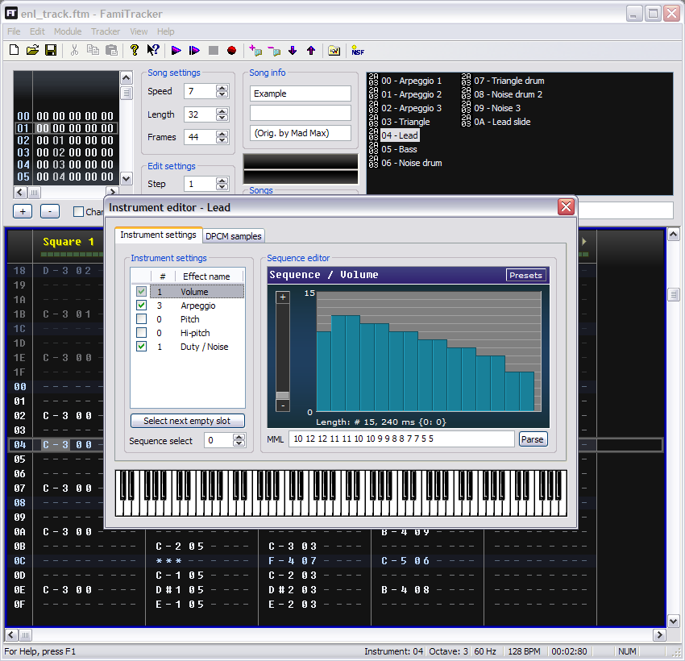
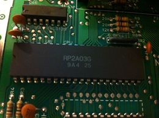
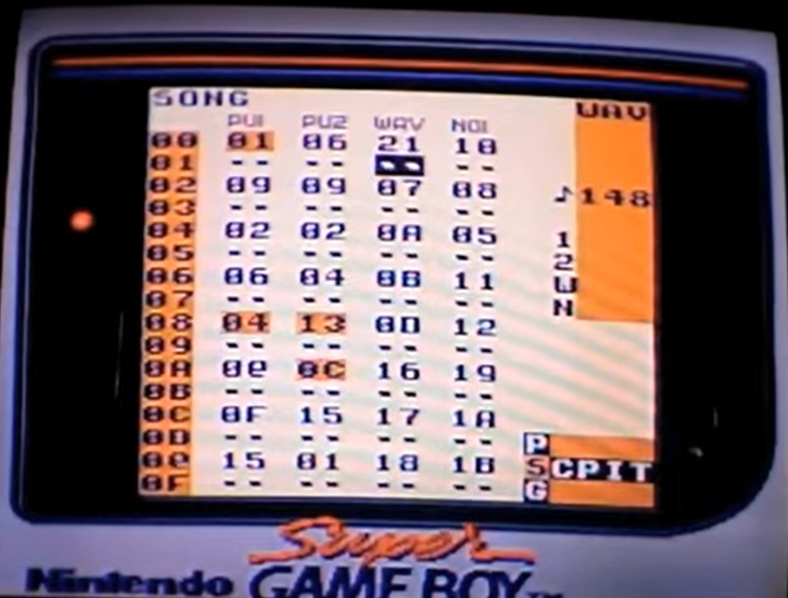

The first order of business is to create an instrument for your project.
In the top, right-hand corner of your screen, you will see a black box - it's empty,
for now, but that'll change in a moment.
Click the "New Instrument" button below the...
continue reading »

Expansion chips - like MMC5 or VRC6 sound chips - can be added to any project module. From the top
left, simply open Module>Module Properties. There, you'll find an Expansion Chip menu, where you
can choose from one of...
continue reading »

Instrument settings are defined through a series of sequence graphs.
In this case, a sequence is a list of values that are applied to the channel
at the frame rate determined in the Tracker menu. For instance, 240Hz...
continue reading »